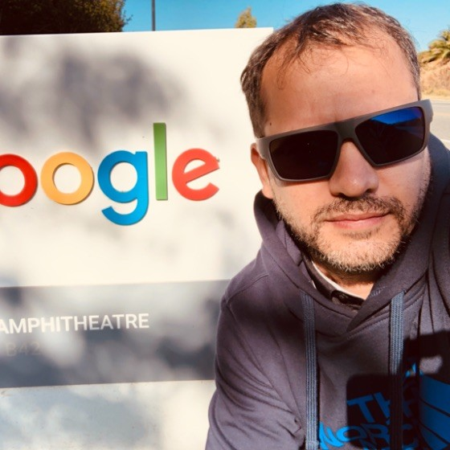

Open main menu
Portada
Acerca de
Portafolio
Contacto
View notifications
Open user menu
Acerca de
Biografía

Javier Acosta
Nacido en la Provincia de Catamarca
Estudie en la Universidad Nacional de Catamarca
Licenciatura en Computación
Profesorado en Computación
Tecnicatura en informática en Diseño Web
Tecnicatura en informática en Redes